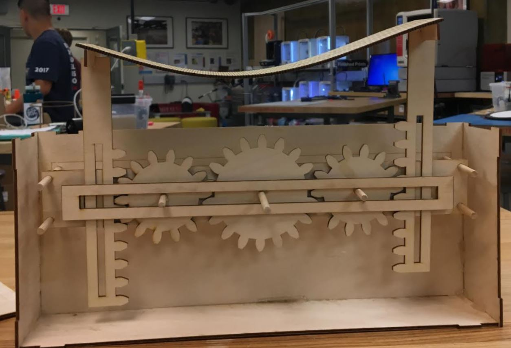
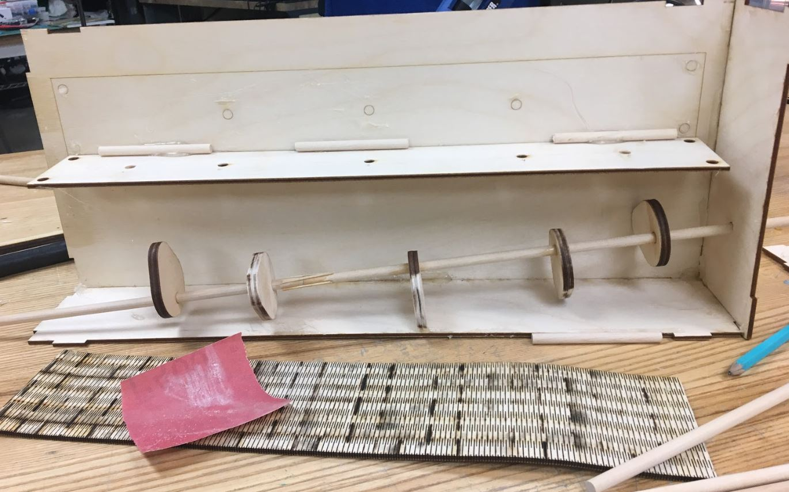

This piece was a project made for an assignment that asked for a laser cut mechanism that turned rotary motion into linear motion. The piece involves a series of cams that move a peg which triggers a wave motion in a living hinge.

Initially, I had used a series of gears and two arms to create this motion, but the motion it produced in the living hinge was really stiff, so I changed the internal mechanism in order to get a smoother movement.

I placed washers at the end of my pegs to weight them down and get them to fall onto the cams more easily. Additionally, I sanded down my cams, all the dowels and holes that were on my mechanism. I wanted there to be as seamless of a fit as possible and I wanted to minimize the friction between parts. I also created a double layered brace for my pegs to travel through so they would be stabilized. I also made wider end plates for my pegs so they were able to be caught and moved by my cams.
Overall, I was pleased with how this project turned out. It made use of several interesting parts to make an interesting visual experience. In the future, there are several approaches I would take to improve my design. First, I would scale the whole project down. I think the smaller, more compact design would help to draw more attention to the main visual focal point of the piece – the living hinge. Additionally, I would work to make the inner braces cleaner. I used hot glue to assemble the braces that sandwich the gears because I wasn’t 100% sure it would work and I wanted to be able to disassemble it if I had to make adjustments. Additionally, I would try to make the gear part of the gear shaft shorter because some of the teeth emerge from the top of the box, creating a visual distraction.